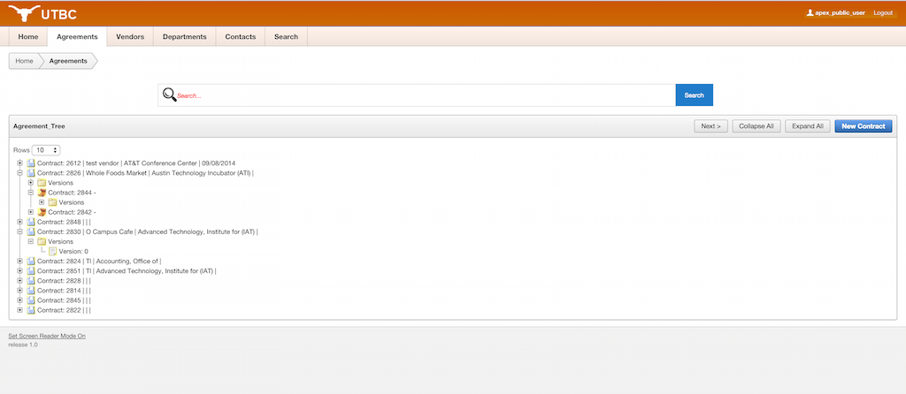
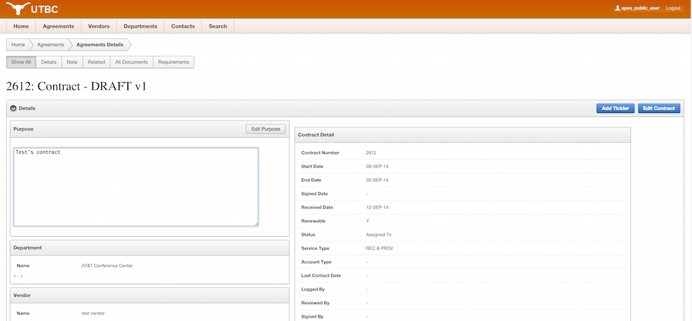

I'm Ashley and I'm a Computer Science student at the University of Texas at Austin with minors
in mathematics and classical civilizations. I enjoy rock climbing, swimming, and Rubik's cubes.
Skills
Object Oriented Programing | Intermediate
Web Development | Basic
Languages
SQL and PL/SQL | Advanced
Java | Intermediate
Python | Intermediate
C++ | Intermediate
Git | Intermediate
LaTeX | Intermediate
Panoramic and mosaic image generation
This was a continuation of my computer vision class. Initially, the code only worked well making a 3 image
panorama. It currently works with any number of images as well as being able to create mosaics.
Future endeavours include image blending and equirectangular/"little planet" image
stitching.
Climbing wall panorama - 7 images

UT main mall on 9/11 panorama - 4 images
UT Tower mosaic - 7 images

UT Tower mosaic - 15 images
Computer Vision Route Detection
This was our end of course project for the class, and we decided to work on climbing wall
route detection. We were able to accomplish the detection of the individual tapes from a
route as well as the color of the tape. For simpler images, we were able to obtain a 91%
accuracy for detecting known tapes on the wall. For more complex images, we were able to
obtain a 85% accuracy. As for the color detection, for simpler images, it had an average of
69% accuracy of correctly identifying the color of tape. For the complex image, it had an
accuracy of 47%. You can read more about our results and process in our final report here: here

Routes detected on simple wall
Routes detected on complex image
UT Business Contracts Database
Initially this was an end of class project. The project was to build a database and
application for UT's business contracts department. Then for the summer, the professor put
together a team of
five students who were interested in continuing the project. We used Oracle products to build our application
and
model such as; Data Modeler, SQL developer, and Application Express. The team met regularly over the
summer, as
well as meeting with a business contracts employee to make sure we were getting features they wanted in the
application. Here is the application
documentation we created in LaTeX

Our logical model

Home Page

Tree Implementation for Contracts and Versioning

Details Page for Contracts
UT's Outdoor Center Database
I designed a database and application for UT's Outdoor Rental Center. I used Oracle
products, such as; Data Modeler, SQL developer and Application Express. The application
allows for staff to see key information about certain contracts, such as, contracts that
are due that day, going out that week, or contracts that are late. It also would allow for
customers to see what equipment is available for any particular date. Here is the
application's documentation.

Logical Model
Item availability by item type and date
World Crisis Database
This was a class project for a software engineering class. We were to make a dynamic website that
emulated IMDB with World Crisis, or WCDB. We created a Django app hosted by Heroku with Python and
Twitter Bootstrap. Our team used AngularJS to embed dynamic content from selected crises,
people, and organizations. Here is our techincal report